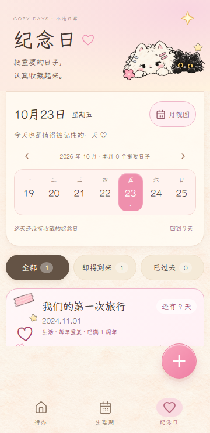
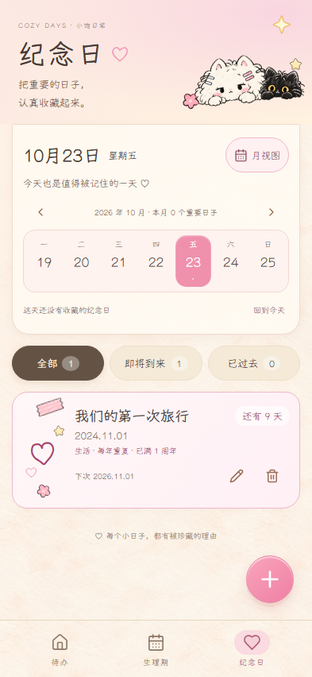

应用功能来源 ab0b533d380dbcd543f3eb9b95aaf1205ae542cd：npm ci、两项构建、完整 E2E 126、Pages 4、纪念日专用39、生理期专用51与 cap copy android 通过。元数据来源 4e4561f629902c4f210256edd5bb3fc48b7ecc82：两构建与5项素材/哈希测试通过；未将前一个SHA的全量结果冒称本SHA全量通过。最终HEAD CI、独立复审与线上功能验收由总控继续。
真实Playwright Chromium，合成数据，固定2026-10-23 12:00 Asia/Shanghai、悠哉字体、seed100/101/102、scale1。以下截图的实际构建SHA为 4e4561f629902c4f210256edd5bb3fc48b7ecc82。完整来源与SHA256。
Android真机：未验收。仅验证资源复制，未发布APK。纪念日9项、生理期11项插画仍待补交；使用现有已授权项目素材，无参考图裁片冒充正式素材。


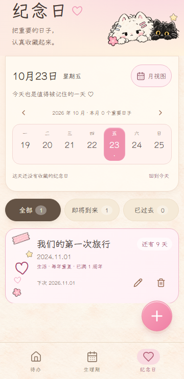

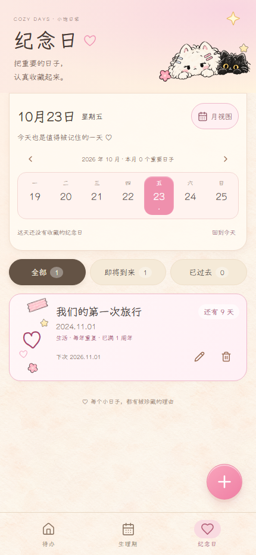
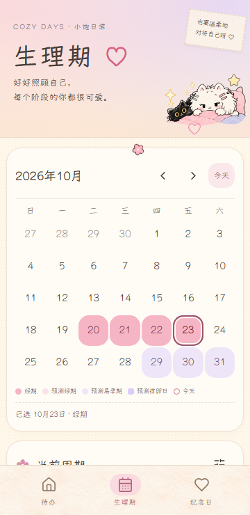
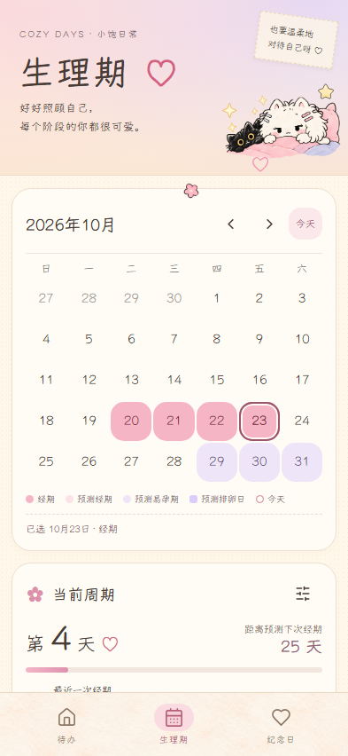
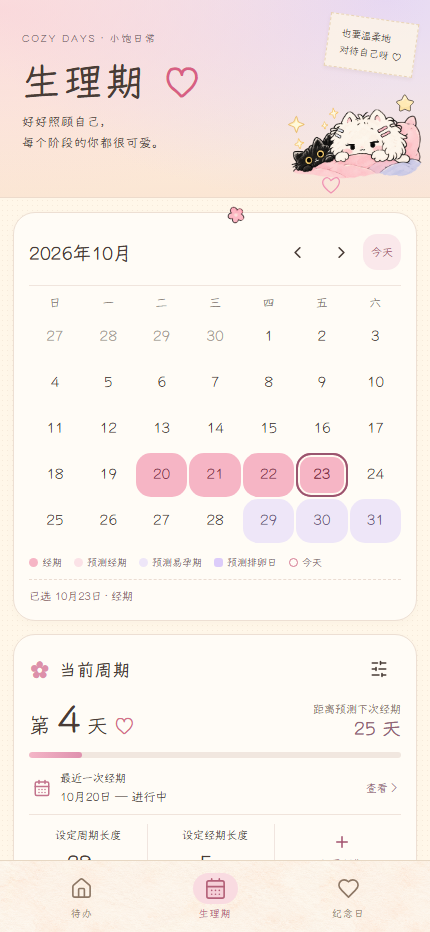
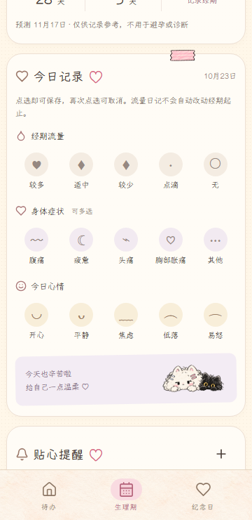
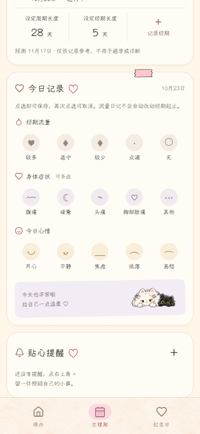
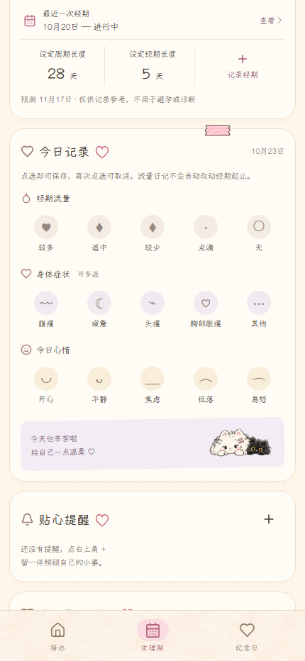
三尺寸变化像素均为0，RGBA最大通道差均为0；没有缩放、遮罩或容差。基线b059b6d独立构建，未改源码。


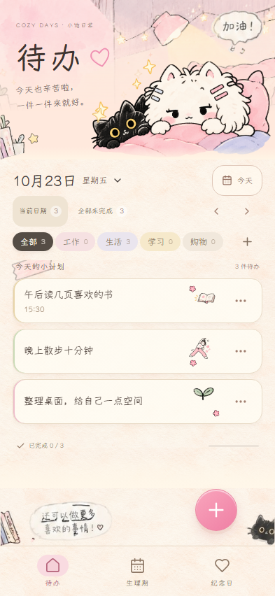

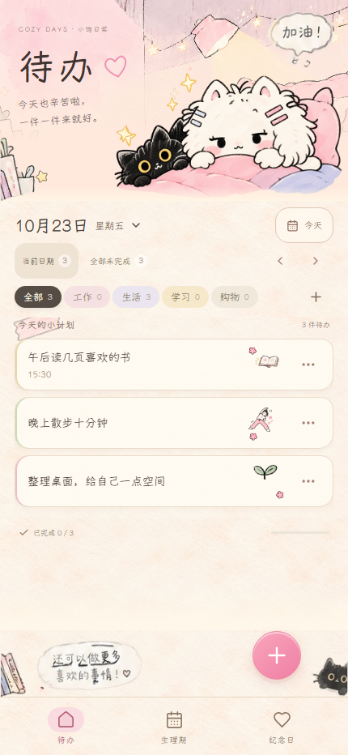

数据库写入失败时显示草稿范围并提供重试；回归验证数据库原记录仍在，重试后删除持久化。来源为ab0b533。
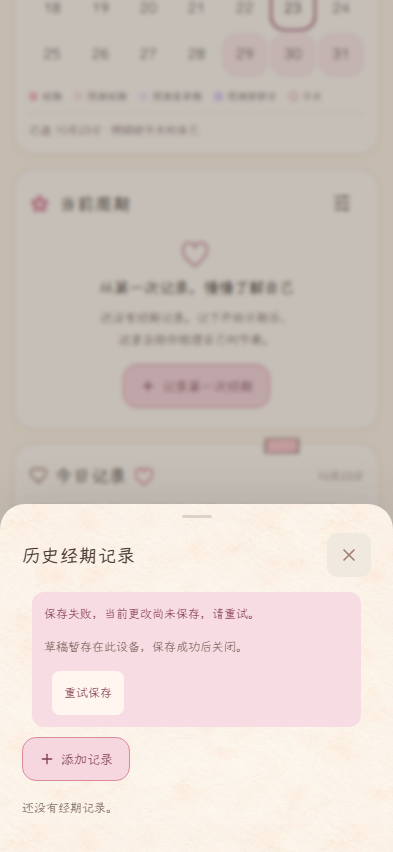